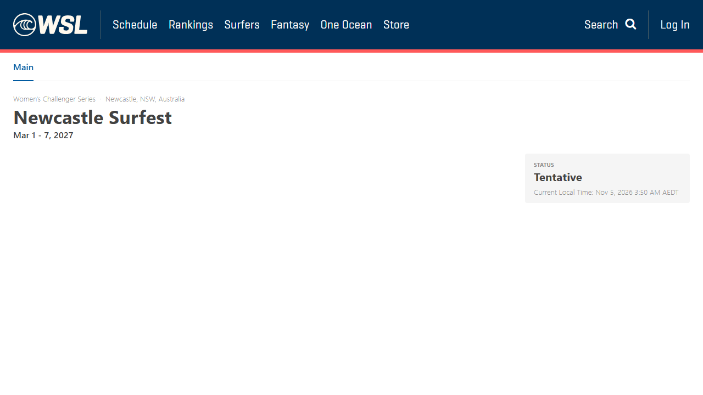
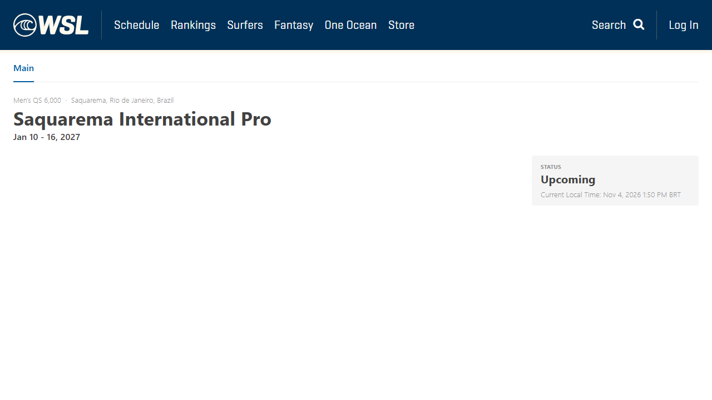
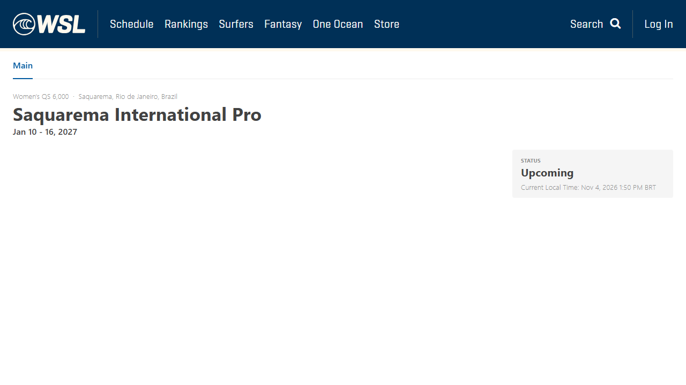
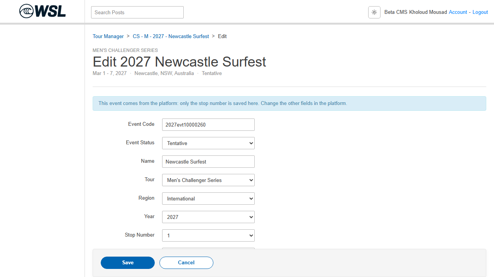
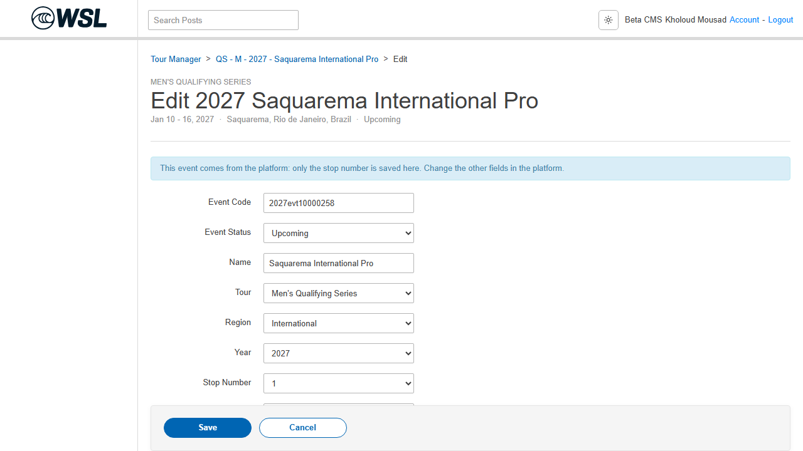
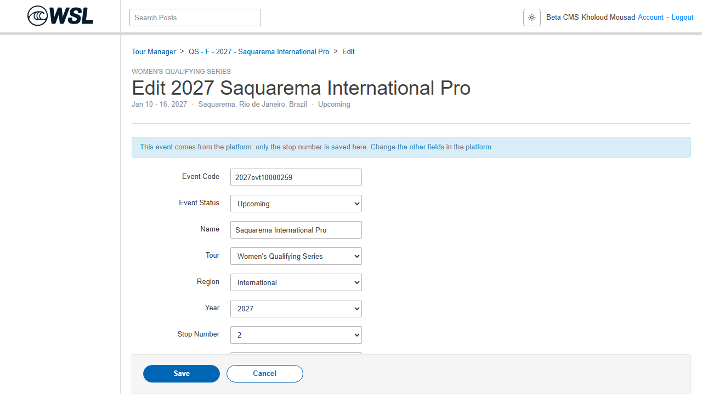

4 November 2026 � Read-only dev ? CMS beta ? website beta investigation
Fresh results: all 10 dev events still exist and are Tentative or Open for entries. None of the 10 identity codes from the saved deployed feed matches the complete fresh CMS 2027 inventory (185 events).
| Source event / division | Expected identity code | Fresh source dates / state | CMS candidates |
|---|---|---|---|
| Newcastle Surfest MWCS | 2027evt10000914 | 2027-03-01 � 2027-03-07 Tentative | 2027evt10000260 � 03/01/2027 � 03/07/2027 � CMS 5402 2027evt10000261 � 03/01/2027 � 03/07/2027 � CMS 5403 |
| Newcastle Surfest WWCS | 2027evt10000915 | 2027-03-01 � 2027-03-07 Tentative | 2027evt10000260 � 03/01/2027 � 03/07/2027 � CMS 5402 2027evt10000261 � 03/01/2027 � 03/07/2027 � CMS 5403 |
| Lacanau Atlantic Pro MWQS | 2027evt10001004 | 2027-01-07 � 2027-01-11 Open for entries | No same-name match |
| Surf City Open MWQS | 2027evt10001000 | 2027-01-11 � 2027-01-15 Open for entries | No same-name match |
| Saquarema International Pro MWQS | 2027evt10001008 | 2027-01-21 � 2027-01-27 Open for entries | 2027evt10000258 � 01/10/2027 � 01/16/2027 � CMS 5404 2027evt10000259 � 01/10/2027 � 01/16/2027 � CMS 5406 |
| Lacanau Atlantic Pro WWQS | 2027evt10001005 | 2027-01-07 � 2027-01-11 Open for entries | No same-name match |
| Surf City Open WWQS | 2027evt10001001 | 2027-01-11 � 2027-01-15 Open for entries | No same-name match |
| Saquarema International Pro WWQS | 2027evt10001009 | 2027-01-21 � 2027-01-27 Open for entries | 2027evt10000258 � 01/10/2027 � 01/16/2027 � CMS 5404 2027evt10000259 � 01/10/2027 � 01/16/2027 � CMS 5406 |
| Mid-Atlantic Longboard Classic MLQS | 2027evt10000998 | 2027-01-03 � 2027-01-05 Open for entries | No same-name match |
| Mid-Atlantic Longboard Classic WLQS | 2027evt10000999 | 2027-01-03 � 2027-01-05 Open for entries | No same-name match |
The source feed exported these records with new website codes and no legacy eventID. Freshly created events sync successfully, so the prior fresh test proves the creation/update pipeline works for new records; it does not prove these old records were backfilled.
Local sync-service code at cc5715c explicitly states that a new event consumer starts at the stream head, and existing calendar events require resync. The message maps eventNo from website_code and eventID from memberpro_event_id. This makes missed historical backfill and unresolved legacy identity plausible causes. No log/message evidence establishes which cause affected these ten records.
Backend should refresh the feed/mappings, trace each UUID/code through producer, queue and importer, check first-deployment/resync history and rejected/dead-letter messages, then reconcile older CMS records before deciding which records to resend. No resend or mapping repair was performed.
CMS 5402 beta page � HTTP 200
CMS 5403 beta page � HTTP 200

CMS 5404 beta page � HTTP 200

CMS 5406 beta page � HTTP 200

Fresh details: 2026-11-04T16:48:36.071Z. Fresh CMS inventory: 2026-11-04T16:48:03.246Z. Original feed: 2026-11-03T22:37:30.750862+00:00.
Exact current readbacks and candidate comparisons � Complete CMS inventoryFour older-code CMS form screenshots:


